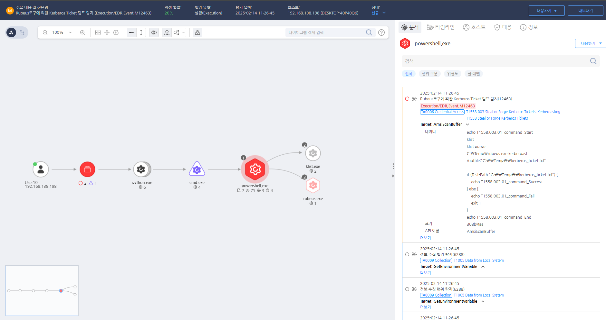

T1558.003.01 Collect and Decrypt Kerberos Ticket Information
D3FEND
MITRE ATT&CK 액션을 기준으로 대응 방안을 작성
Detection
탐지 방법 작성, EFR과 무관하게 해당 Action에 대한 탐지 방법 명시
Detection(EDR)

Response
RC4 대신 AES와 같은 더 강력한 암호화 알고리즘을 사용하여 티켓을 암호화합니다.
Mitigations
1. API 요청 및 응답 암호화
- TLS/SSL을 사용하여 API 요청과 응답을 암호화하여 중간에서 가로채지 못하도록 합니다.
- API 인증서 검증을 강화하여 서버 간 통신이 신뢰할 수 있는 채널을 통해 이루어지도록 보장합니다.
2. API 접근 제어 강화
- OAuth, API 키 또는 JWT(Json Web Tokens) 등을 사용하여 API 요청을 인증하고, 인증되지 않은 요청을 차단합니다.
- 최소 권한 원칙(Least Privilege)을 적용하여 API의 사용자가 최소한의 권한만 가질 수 있도록 설정합니다.
- IP 화이트리스트를 사용하여 특정 IP에서만 API 요청을 허용하고, 공격자가 임의로 요청을 시도하지 못하도록 합니다.
3. 요청 무결성 및 타임스탬프 검증
- HMAC (Hash-based Message Authentication Code) 을 사용하여 요청의 무결성을 확인하고, 요청이 중간에서 수정되지 않았음을 검증합니다.
- 타임스탬프를 포함하여 요청의 유효 시간을 제한하고, 오래된 요청은 거부되도록 설정합니다.
4. 로깅 및 모니터링
- API 호출 로그를 활성화하여 의심스러운 요청을 실시간으로 모니터링합니다.
- SIEM(Security Information and Event Management) 시스템을 활용하여 API 요청 패턴을 분석하고, 비정상적인 활동을 탐지합니다.
5. 사용자 교육 및 보안 인식 강화
- 개발자 및 운영팀에 보안 교육을 제공하여 API 보안의 중요성을 인식시키고, 보안 취약점이 있는 코드를 피하도록 합니다.
- API 요청을 처리할 때 보안 관점에서의 올바른 접근 방법을 교육하여 보안 사고를 예방합니다.
Affected Techniques
Action 실행시 함께 영향을 받는 다른 Techniqes
|D3FEND|
|:-----------:|